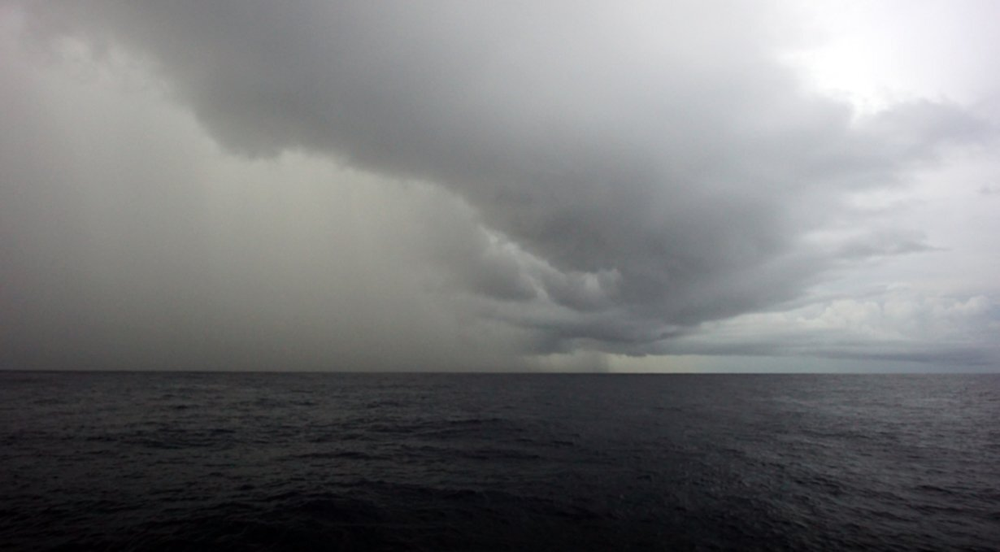
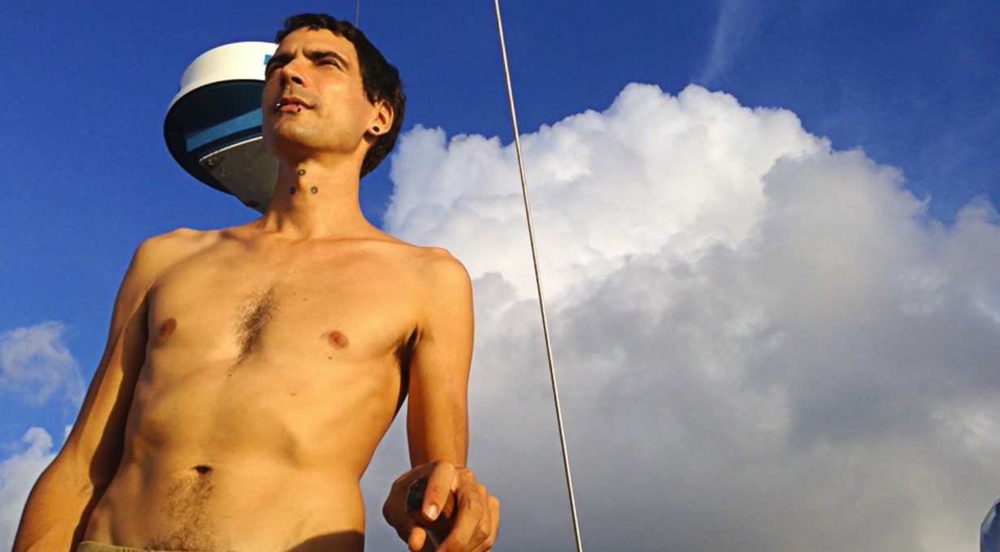
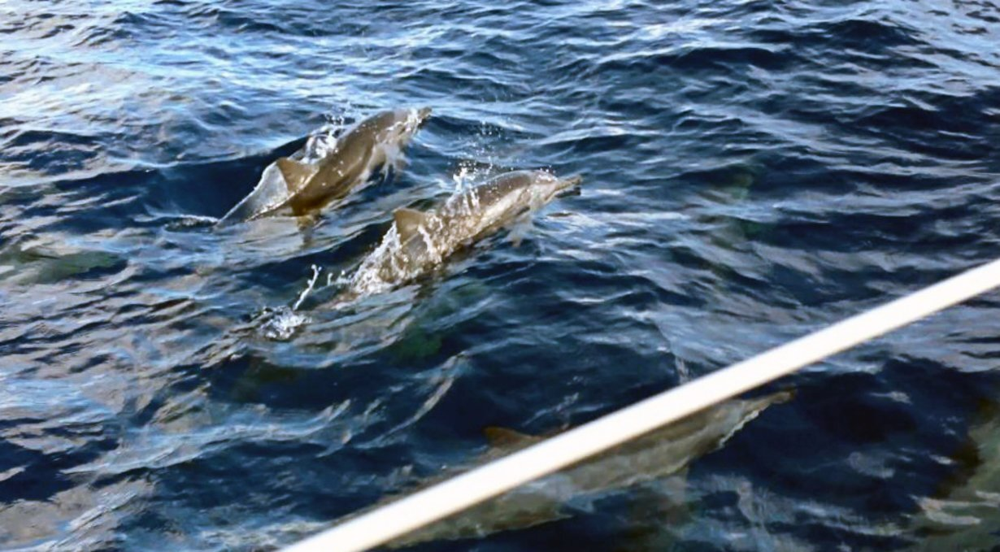
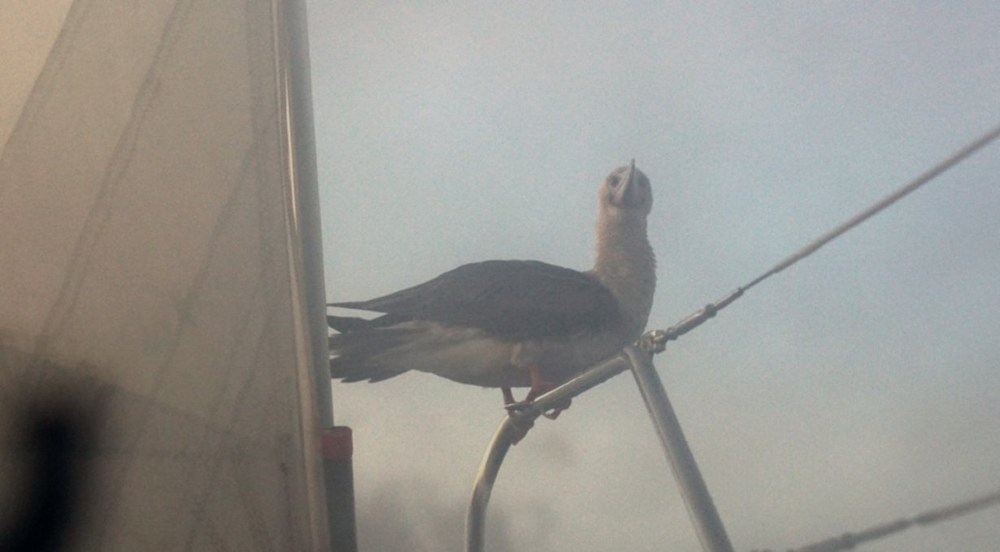
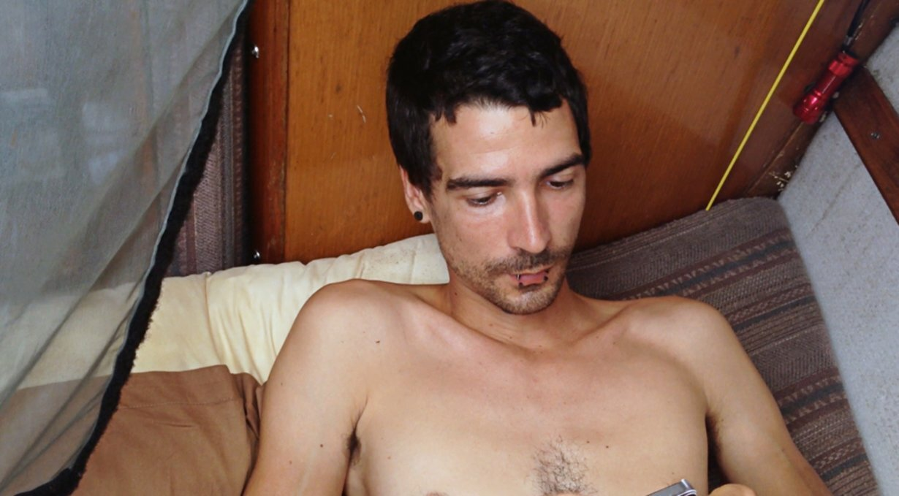
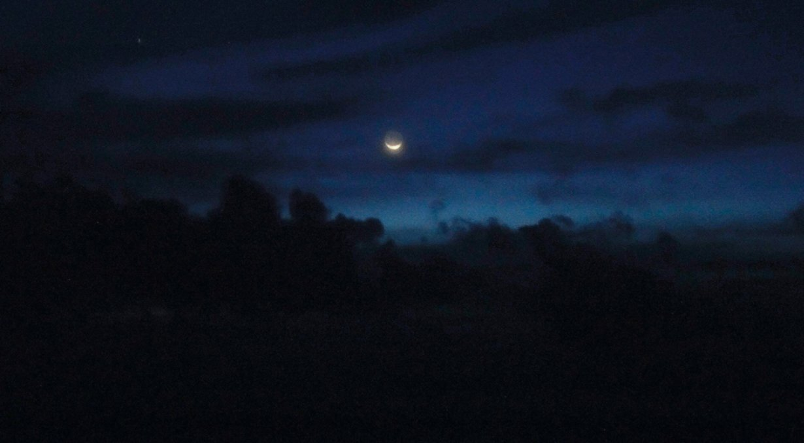
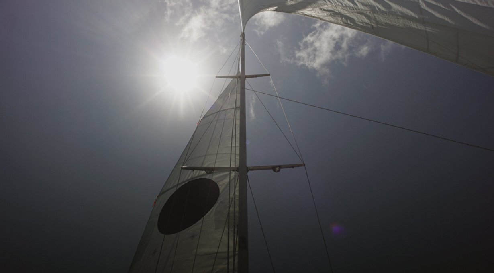
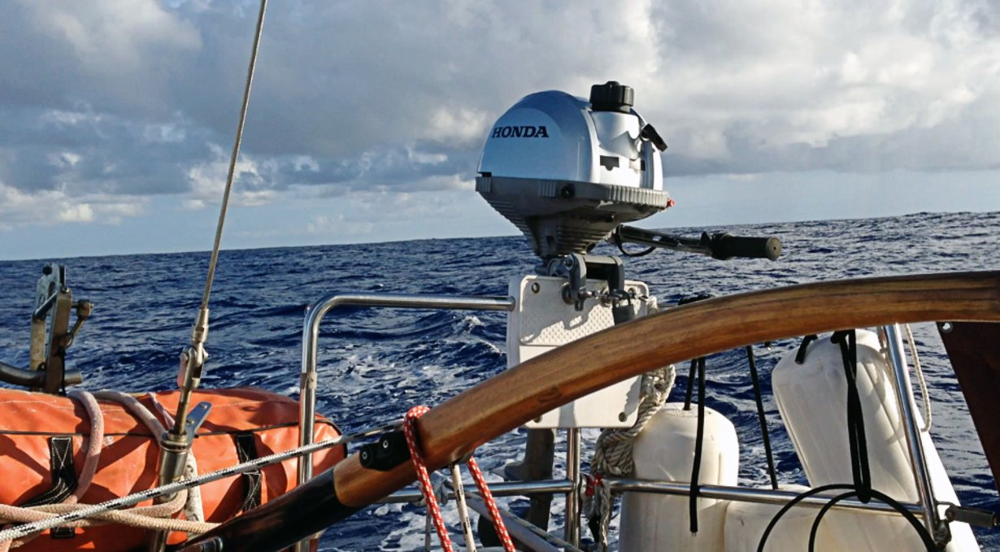
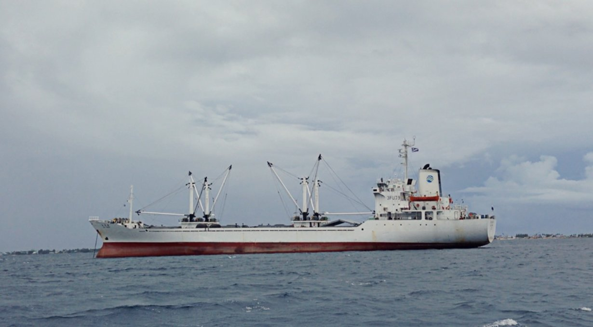
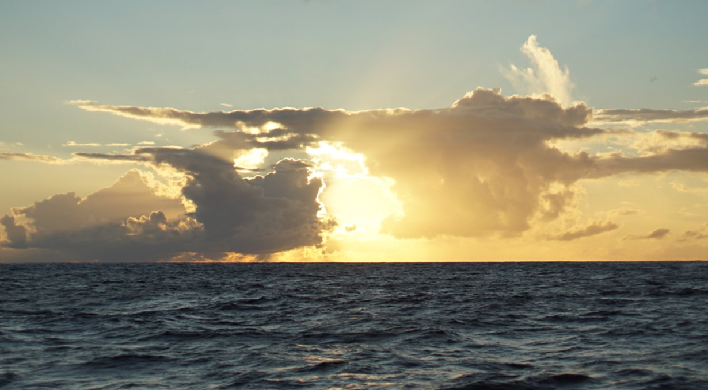

doldrumming
Doldrumming
18.11.16
Pacific Ocean, between Fiji and the Marshall Islands
Here we go again, time for another passage! We left Fiji on October 23rd 2018, eager to spend some time on the water again. Our plan was to stop by Tuvalu, maybe Kiribati, before arriving in Majuro in the marshall islands where we'd be spending two months before moving off west to Micronesia (we ended up not staying there either, plans change). We left, knowing that this wasn't going to be an easy ride...
Two areas of calms lie north of Fiji: the SPCZ (south pacific convergence zone) and the ITCZ (intertropical convergence zone). If you look at windy, hovering around the countries of Tuvalu and Kiribati are two bands of blue, and blue means there is no wind. The size and location of these bands varies from day to day, week to week.. they phase in and out of existence with the weather and influence of the trade winds.
Sailors fear these blue bands because the weather there is difficult, not only do you suffer calms, but also a continuous ballet of squalls and thunderstorms. We've been through the doldrums (the ITCZ) once already when we crossed from mexico to french polynesia
squalls
Why do some sailors fear being becalmed at sea? Before we made the Pacific jump, some admitted carrying enough fuel to carry them across an ocean, and that in quiet times they wouldn't hesitate to use the Iron Wind. We think this is unnecessary. Squalls are not that scary, not if you're ready and know what to expect.
Squalls bring sudden high winds and rain in passing. They usually blow at around 25 kn (46 km/h) to 40 kn and last around 30 minutes. They are easy to see from a distance, big puffy cumulonimbus clouds, with dark bottoms and a skirt of rain. Another tell-tale sign of their approach is a change in the surrounding air temperature. The air becomes noticeably cool.
Squalls do not move with the prevailing winds, but at an angle to them, and can affect a boat even when a good distance away. Whenever we see a suspicious formation on the horizon, we keep our eyes on it to track its progress, to see if our paths will cross. If it comes close, we alter course to aim for its periphery, as it is better than going straight through it. We also reduce sail, to lessen its effects. If the squall is too strong, we simply bear off and wait for it to pass.
Reefing the mainsail before darkness falls is especially important in areas prone to squalls. It ensures that the person on watch isn't overwhelmed, and that the person off-watch can sleep well. Squalls are visible at night too, especially if the moon is full and bright. We look for dark spots on the horizon, and try and see if we can see the sky underneath. If we can't, it meant the cloud has rain underneath it, and it is likely a squall. A dark mass moving contrary to the prevailing wind is also a good indicator of an approaching squall.
The doldrums is an area where prevailing winds converge, creating an area of perpetual calms. In such places we use squalls to move forward, effectively becoming storm chasers. Squalls are just another means of propulsion on a quiet ocean. We chase squalls for their wind and for their water. Water is not hard to come by when there are squalls around. We always make sure to have a bucket on deck to attach to the end of the boom to collect it.
While calmed on the water, there is no breeze and when near and around the equator let me tell you, it is HOT. When we became mostly sweat, we'd walk on deck and scoop up buckets of sea water to empty over our heads. Then, we'd spend the next hour picking bits of dry salt off our skin. Clothes were optional on this passage, whatever we'd wear just ended up soaked in body water within seconds.
Being out there was more pleasant with a good breeze, which we would get every 3-4 days for 2 days. When downloading the weather with our satellite phone, we'd always see a patch of blue on the grib files coming into view ahead of us. "More bobbing on the water in our future!" Devine would say.
We did have some visitors to help distract us from the lack of weather, a pod of dolphins accompanied us for a while, and a red-footed booby came to land on the end of our boom one night.
It was balancing itself with its feet and tail. It stayed there a while, then decided to land on the tiller as I was driving. My hand was on the end of that same tiller, just a short distance from it. I looked at the bird then, puzzled by its choice of perch. Bothered by my questions, the bird took off, and came to sit on the top of the radar post instead.
At this point I had a good relationship with this bird. I liked having it around, but the love story ended when it began to shit in a torrential fashion. "Okay," I said, "it's not a big deal. This bird isn't that big, and it stands to reason that it will empty its tanks eventually." It didn't.
Devine's shift started shortly after, and I went to bed. When I woke up again I looked at the life raft, and our solar panel and was horrified at the sight of it all covered in drippy and stinky booby droppings. Devine looked equally as horrified. "It hasn't stopped shitting!" He said to me. "I tried to shoo it off but it keeps coming back!"
Our guest had overstayed its welcome. I spent my entire shift shooing it off of the radar post by brandishing a cushion at it. I didn't want to hurt it, but did my very best to keep it from getting too comfortable. It would take off when it got too annoyed, then come back to try and land again, I'd shoo it off some more with the cushion, then it circled back around to land again... we did this for 2 hours, and then eventually it decided that this perch wasn't worth the trouble and sought a new one on Pino's bow on the pulpit rail. That was a good place for it, I thought. Out of smelling range.
Our friend the booby had found a new place to shit aboard Pino. We named this bird Clippy, because it had a feather missing in one wing. We saw Clippy again later, hovering above us with another of its kin. We feared we'd get twice the amount of deposits if we allowed Clippy and its friend aboard, but they decided Pino wasn't very inviting and sought a more friendly float.
Clippy wasn't our only visitor, when we left fiji we left with 3 geckos. The first one we saw was in the mainsail as we hoisted it, we saw it scurry up the sail. We feared it would slip and fall overboard. It ignored our warning, but it also didn't fall overboard because we found it again in the anchor locker.
The other two were hanging around the dodger. They would come out when the sun was low and the temperature dropped to look for food. Pino probably had some insects aboard, a buffer for a gecko. This was an ideal arrangement. They get to stay, while they help rid us of bugs—good deal. Every evening, we'd wait for 'gecko hour', and watch them walk around the deck. Geckos make good boat pets. They're non intrusive, non destructive, they eat undesirables and are cute as hell. We think they boarded Pino while we were at Vuda Point marina, it was the only time we'd ever been near land in that country. They likely walked the docking lines to our boat. We feared that his bridge between us and land would make it too easy for undesirables (cockroaches) to come in, but they haven't.
We had planned on stopping in Tuvalu on this trip, but we decided not to in the end. Why? Because the wind was good, and we just wanted to be out there. We had no desire to be back on land just yet—crazy, we know. Not just this though, we also had no American dollars, and knew that the island had no ATM's and no way to convert cash. If we went, we'd have to spend precious fuel—there was no wind— and we'd have no cash to refill our tanks, or to buy food.
So we went past it, taking advantage of the 3 days of good wind that was forecasted—in truth, it ended up being 2 good days, because weather forecasts in that area are just not very reliable.
The two good days of wind did get us over to the first islands of Kiribati. Then, we were becalmed again, stuck between 3 islands with weak winds coming straight out of the north. We can't make good progress with winds coming out of where we want to go, so we'd tack west... then east, then west again. We'd sail between the same two points making no real progress at all. That day, I think we made 10 nm (18 km) northward. We got a text from Devine's dad then. "Slow day huh?"
We always feel a bit self-conscious about our progress, knowing people are watching and calculating the distance we make each day. "Only 40 nm (74 km)?! Yeesh. Are you on a boat or a piece of driftwood?" We did eventually get out of there, the wind fell back to the south east and we were able to make some forward progress.
We don't always read, or spend time thinking on long passages, we also nap a lot (in the beginning anyway). Devine ran out of podcasts early on, and had the idea of ripping the audio from films or series. We'd listen to the audio from Lost in Translation, Howl's Moving Castle and 30 Rock while driving at night. I'd laugh alone in the dark, listening to conversations between Liz Lemon and Jack Donaghy.
In the evenings, we'd wait for the moon to rise, or set. One night we noticed a Cheshire cat-like grin in the sky. The moon was sideways, lit from the bottom. We thought that maybe this was because we were at the equator. We still don't know what caused it, but it looked beautiful, like a silver bowl, ready to collect the shooting stars that fall too near to it.
Pino and its crew had passed the equator back into the northern hemisphere. We sent a text to our parents then to tell them we were in the same hemisphere again. The last time we crossed it was in March 2017, now, we'd done it again in November 2018, 20 months later.
When we arrived in the waters between Kiribati and the Marshalls, we began to feel more current pushing us from west to east, and saw large waves carrying refuse. We saw a lot of trash. Every two minutes we'd spot a plastic bottle, some unidentified colored container, styrofoam, and once, a long orange tube undulating in the waves. We hadn't seen another human in over 20 days but there were clear signs of their proximity. We looked to our left and saw yet another floating piece of garbage. "Oh no wait, it's a bird. OH nope! It's a bird sitting ON a piece of garbage."
The bird was using a plastic bottle as a float, unlike us, the bird didn't care about it being there, in fact, it seemed to think it rather convenient. Out here, discarded nets can host small ecosystems, but they also trap birds and turtles, while slowly disintegrating.
We kept Pino island clean, compressing our trash into bags. We take care of our home, although sometimes things do get messy and items do break. One of the slides on our mainsail broke off, leaving a big portion of the sail detached from the mast. This causes air to pass between the luff and the mast and disturbs the shape of the sail while putting more pressure on other slides and slugs (we have 4 battens in our main). We could see then that another slide was about to break, half of it had snapped off already and so we reinforced it and hoped it would get us to Majuro. It did, in fact, it broke off entirely just as we were tacking back and forth to the anchorage inside the lagoon.
Getting into Majuro was tough. We were on the east of the island, and had to pass between it and another at night in 25-30 knot winds. We were worried about the current running between the islands, but at least the island on the east shielded us against the worst of the waves.
We arrived at the entrance to the lagoon at 0800, the waves at our backs with the wind coming out strongly out of the north-east. Throughout most of our trip, we had moderate winds, now, just as we were arriving we had the strongest blows of the trip. Our arrival into new countries is always boisterous.
Getting into Catalin pass was easy, it was well-marked and wide, the problem came after that. The main city lay on the easternmost point of the lagoon, we'd have to sail into the wind—I did mention the wind was quite strong too didn't I? The town, as well as the anchorage, was 10 nm (18 km) away. This is nothing. We should have reached our destination in under 2 hours but it took us about twice that time since we had to do long tacks to go forward. We were close-reaching, Pino handled that well enough most times but the problem today was the broken slugs in our main. We didn't like the shape of our mainsail, it was ballooning in weird ways, and that's when the slug for the upper batten broke off. We needed to keep the main up to go forward, the boat can't sail into the wind without a mainsail and our engine isn't strong enough to get us past these waves. Having to push something that is damaged past its limit is always worrisome, both of us fell quiet, eyes fixed on the top of the main.
Hold on Pino, we're almost there!
We tacked between the numerous large fishing and cargo ships anchored in the lagoon, hoping one of them wouldn't raise anchor and start to move, the last thing we needed was to start dodging moving targets.
At this point, both of us were tired. Exhausted. Neither of us felt like doing endless tacks... the skies were grey, squall clouds in every direction, winds gusting to high 30's at times. Devine was feeling pretty down by then, we were making progress, but it felt unending. As I said before, when one of us is low, the other by default is almost always in a good mood. I was being extra positive, trying to make a game of it, pointing out all of the weird and funny features of the ships we'd sail past.
We could hear locals chattering on the radio then, using CH16 to exchange pleasantries in Marshallese. It hit us then. After 24 days at sea... we're hearing people's voices! OTHER PEOPLE'S VOICES. This was real. Land was within reach! I looked ahead, and saw a collection of masts. "Boats! Mooring field! Pancakes!"
When arriving into a new country we always have pancakes, it's our little tradition. We ran out of maple syrup in new zealand, but we're still making them! Now we dip them in pekmez (mix of tahini and fruit molasses) or do a savoury thing with olive oil and balsamic vinegar.
We moved into the mooring field, trying to find a ball that was unoccupied. I hailed the local yacht club on the radio to ask about the moorings. They told us that there were two mooring fields, one north and one south. We were heading towards the northern field, since it was closest to where we were. They told us to pick up whatever mooring ball we could find.
We did just that, spotting a free one behind an American yacht. Most of the boats were American. Makes sense, since the Marshalls are a US associated state. I picked up one of the moorings, its line thick with sea slime, algae and other marine growth, and secured Pino to it. My hands smelled like fish but no matter!
We. Are. Here.
We forgot all the badness of the 4 previous hours, the tacking in bad conditions, our damaged slides and slugs, and our salt-pickled flesh. All of it went away. We'd arrived. We made it. We sailed for 24 days without stopping, a trip almost as long as the one we did from mexico to the Marquesas. Our arrival date was November 15th 2018.
Like every other arrival, after many days at sea, we just wanted to lie down and sleep on a stomach full of pancakes... but no, we had to go ashore to check in.
Ah, the irritating dealings with foreign immigration and customs officials! It is hardly ever pleasant, but this is another story in itself. A story of a sinking dinghy, confusion and endless cab rides, to be shared soon once the painful memories of it subside.
**Update** I have since written a blog post about our arrival, it's called the promise of pancakes. You can also watch the video we made of our time at sea!